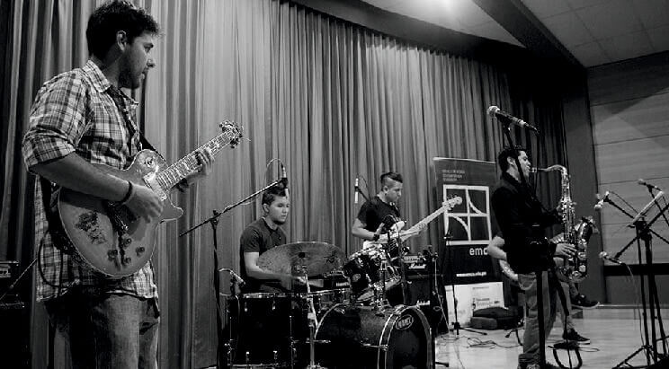

Certificación
Certificado emca en Programa Técnico de música avalado
por ALAEMUS y por el Ministerio de Cultura del Perú.
Duración
4 ciclos - 2 años
Admisión
Para ingresar a este programa, es necesario pasar por un
proceso de admisión.

- 4 ciclos académicos (2 años) donde se le brindará las herramientas
generales para poder comprender y utilizar el lenguaje musical.
- Llevará materias como armonía popular, armonía tradicional,
contrapunto, lectura y entrenamiento auditivo.
- Complementados con otras como historia de la música, filosofía y
negocios musicales.
- Además de diversos cursos en las que pondrá en práctica lo
aprendido en las clases teóricas, además de enriquecer sus
conocimientos musicales.
Clases particulares de
instrumento principal
Instrumentos complementarios como piano, percusión peruana,instrumentos folclóricos peruanos, coro.
Ensambles de géneros tan variados como Rock, Jazz, Reggae,
Funk, Blues, Música Peruana, Música Brasilera, Folclor
Latinoamericano, Ritmos Latinos, Latin Jazz, etc.